Разборы
Где другие ставят прилагательное,
мы ставим число
Каждый разбор начинается со слов «На заметку:», а заканчивается датой сверки и списком источников. Дома и районы — по одной мерке.
Разбор решения
Как выбирать
Не про конкретный дом, а про развилку, с которой начинается покупка: что дороже на самом деле, где считают по-своему и что проверить до сделки.

Напрямую или через брокера
В новостройке через брокера не дороже: комиссию платит застройщик. Но в сданных клубных домах собственники просят на 16–26 % меньше застройщика, а больше половины элитных метров нет на витрине.
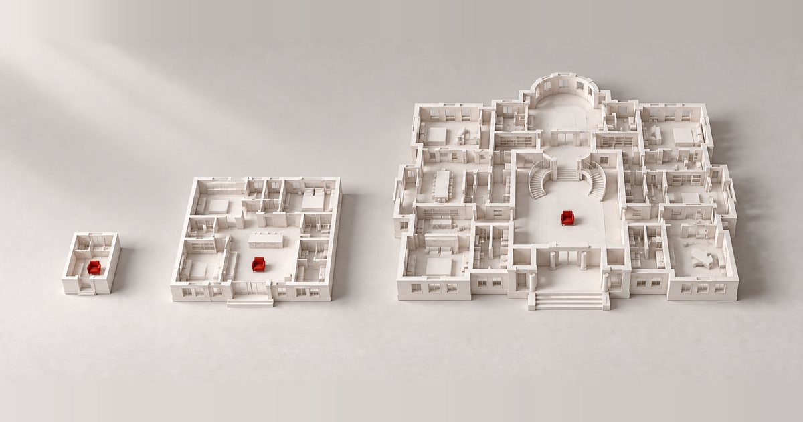
Планировка в масштабе жизни
Студия 16 м², квартира 160 и этаж 1 600: двенадцать настоящих лотов в одном масштабе. Что делает планировку удобной, сколько комнат и санузлов нужно паре, семье с коляской и трём поколениям — и подбор под вашу семью.
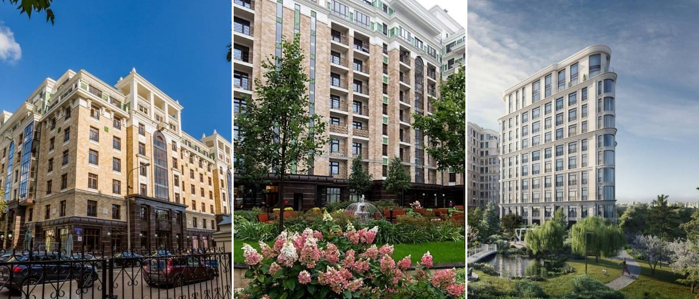
Срок годности дома
Элитная вторичка за десять лет +30 %, новостройки +185 %. Что стареет первым — на примере Триумф-Паласа, — почему ремонт этого не меняет и когда дом пора менять.
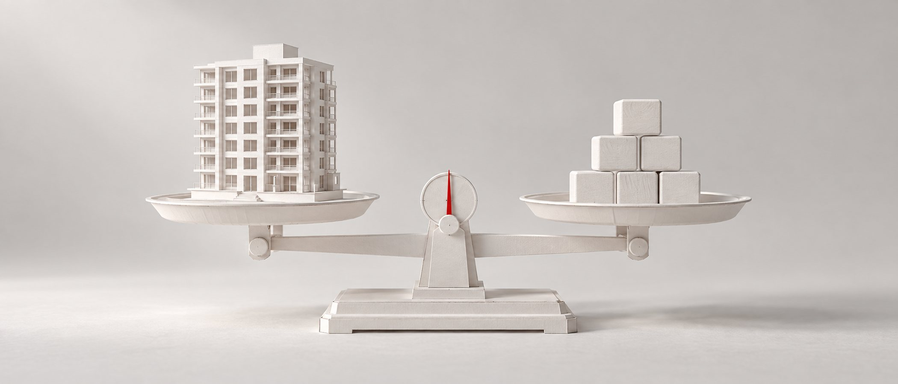
Ипотека с 1 октября
Семейная — от 12 % с одним ребёнком до 4 % с пятью, прописка в купленном жилье, конец коротких субсидий. Платежи и кому что выгодно.
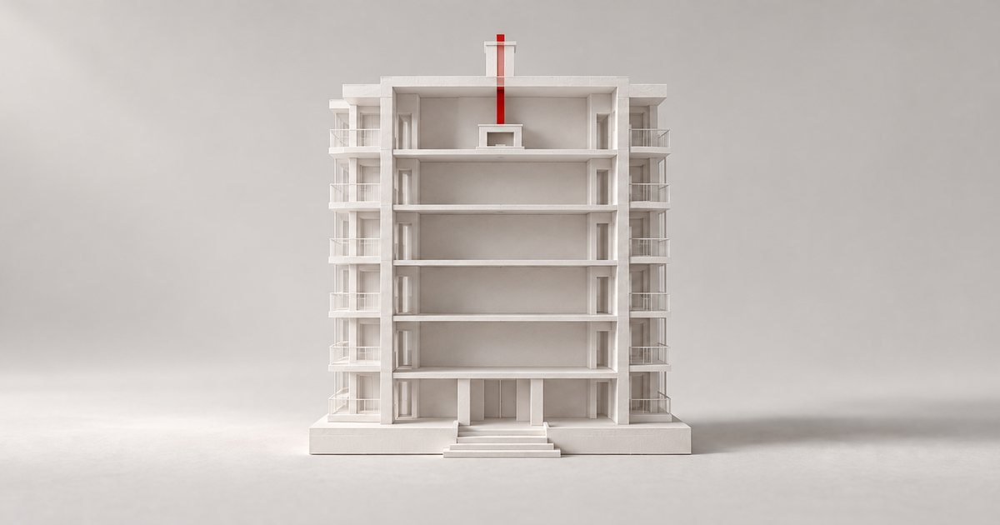
Живой огонь в городе
Дровяной — только на верхнем этаже и под дымоходом из проекта. Где он есть, чем заменить и 13 домов с камином в нашей базе.
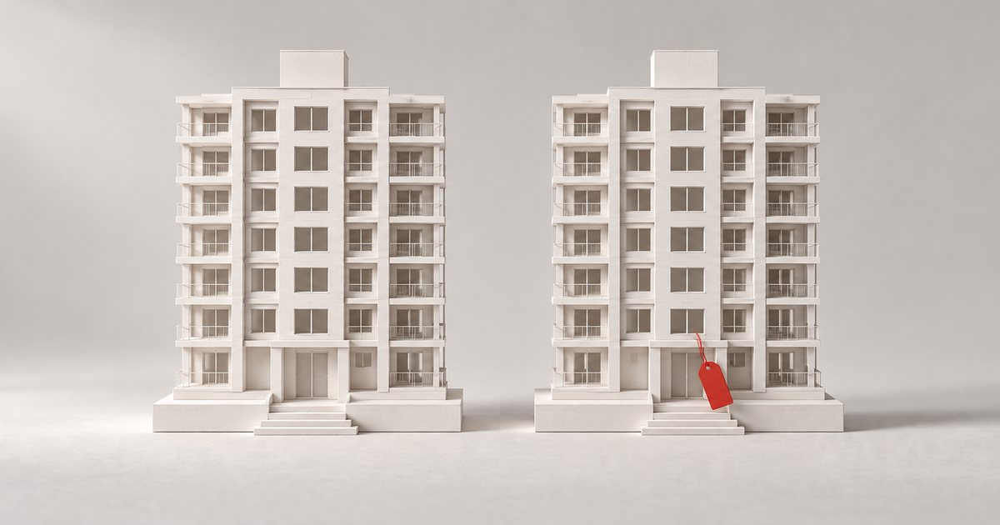
Апартаменты или квартира
Временная регистрация с февраля 2026, ипотека без льгот, налог втрое выше и хостел за стеной. Когда скидка в 24 % того стоит.
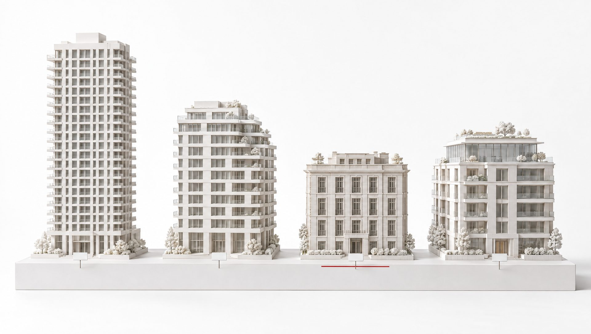
Что не сходится в классах
Один дом — три класса в разных каталогах, «премиум» у МКАД, «элит» на две тысячи квартир. Два класса у каждого дома: заявленный и класс NOTA.
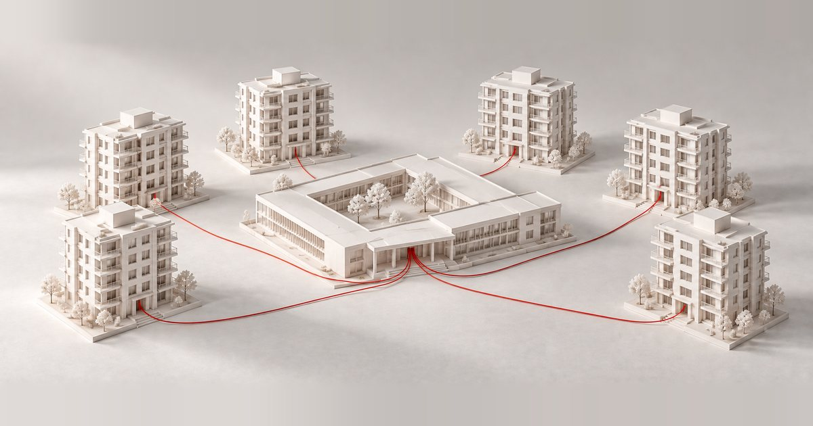
Школа как архитектура
Школьные здания Москвы с известным автором — от конструктивизма 1930-х до кампусов последних лет. Что стоит увидеть своими глазами, когда останется два-три варианта.
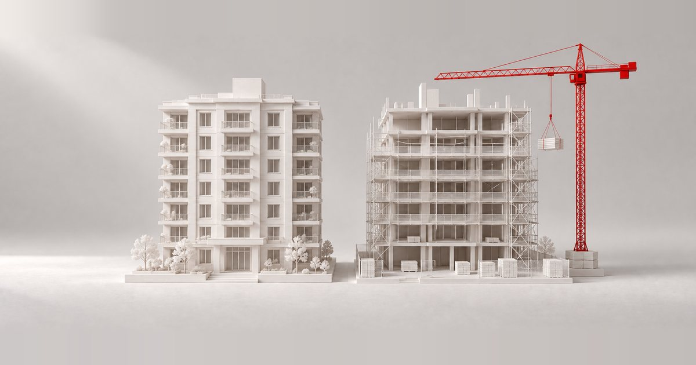
Первичка или вторичка
Разрыв цен 31 %, фейковые объявления, 89 % домов с переносом сроков, ремонт по 60–220 тысяч за метр и ставки. Считаем стоимость въезда.
Разбор дома
Паспорт из девяти проверок
Что мы проверили в конкретном доме и что это значит для того, кто будет в нём жить: адрес, окружение, число соседей, машина, застройщик, сроки, договор и цена — и итог: отметка, «присмотреться» или без отметки.
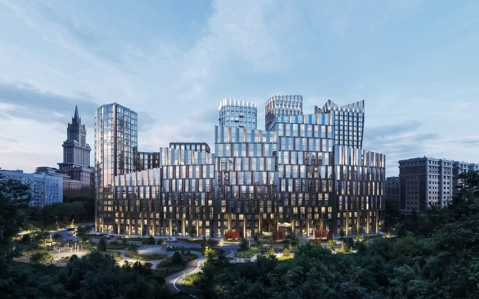
Мастерс
Продают как премиум, по нашей мерке — бизнес: 672 квартиры и 0,54 машиноместа на каждую. Зато четыре квартиры на этаже и срок без переносов.

Верн
Башни 190 и 230 метров на проспекте Вернадского и 560 квартир в первой очереди. Декларации и продаж ещё нет — что проверить до брони.
Красный Октябрь
Двадцать девять квартир на Берсеневской набережной. Адрес и число соседей — «да», паркинг застройщик пока не раскрыл.
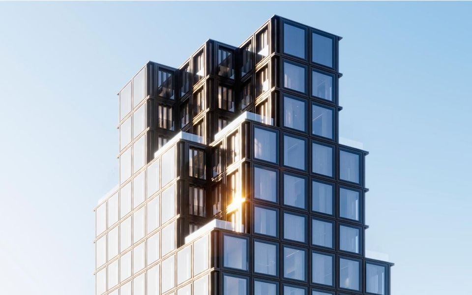
Форум
Сорок шесть квартир и 1,67 машиноместа на каждую — редкий случай, когда паркинга больше нормы.
Scala
Сто шестьдесят квартир там, где в классе обычно строят больше восьмисот. Что это даёт жильцу — и что пока неизвестно.
Разбор района
Цена метра по кварталам
Из чего складывается цена метра внутри одного района, где проходят границы между «тихим центром» и всем остальным, и что это значит для вашего сценария.
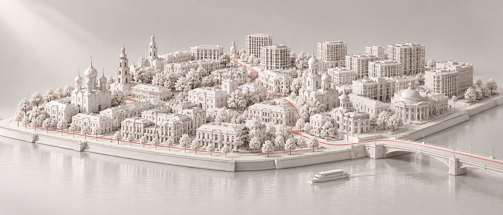
Замоскворечье и Якиманка
Остров, старое Замоскворечье, Якиманка и полоса за Садовым — почему метр здесь расходится почти вдвое на пятнадцати минутах пешком.
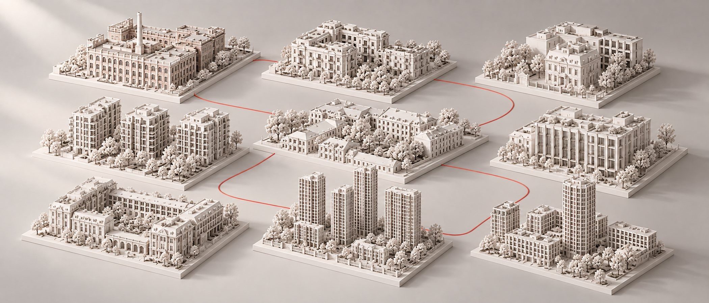
Замоскворечье и Якиманка по домам
Семнадцать домов продаёт застройщик — с ценой входа по формату. Двадцать один живёт только на вторичке. Где цену приходится спрашивать.
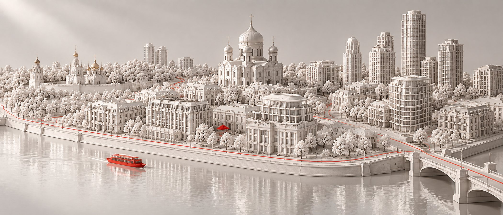
Хамовники
Семь разных Хамовников внутри одного района — и почему цена метра здесь расходится в одиннадцать раз.
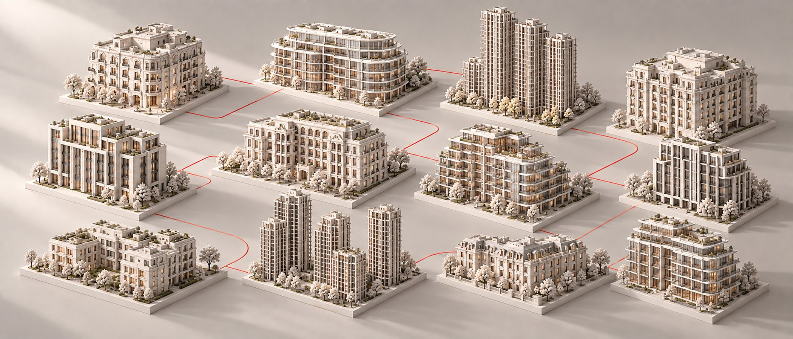
Хамовники по домам
Шесть домов продаёт застройщик — с ценой входа по комнатности. Девятнадцать живут только на вторичке. Где цену приходится спрашивать.

Остоженка
Почему её нельзя считать вместе с Хамовниками и почему у шести клубных домов нет ни одного открытого объявления.
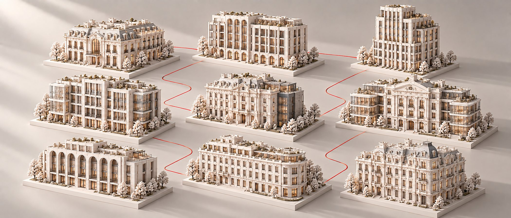
Остоженка по домам
Пять домов у застройщика, одиннадцать на вторичке и шесть клубных домов без единого открытого объявления.
Зачем мы разбираем
Чтобы решение было верным
Мы знаем каждый район и каждый дом: разбираем новые ЖК и сами развилки, с которых начинается покупка. Всё — чтобы вы приняли решение по цифрам, а не по буклету.
Каждый район — изучен
Знаем район от квартала к кварталу: где тихий центр, где шумная магистраль и почему метр по соседству стоит в разы дороже.
Каждый дом — по одной мерке
Девять проверок паспорта и итог у 375 домов: отметка, «присмотреться» или без отметки — с причиной и цифрой. Все дома на карте.
Каждое решение — с расчётом
Первичка или вторичка, квартира или апартаменты, какой класс на самом деле: считаем, что дороже и что проверить до сделки. Как устроен метод.
«На заметку:» — наш канал
Разбор дома, дом месяца, отказы и цифры, которых нет в рекламе. Без «успейте» и «последних лотов».
Рейтинги
Много объектов по одной мерке: школы Москвы с нашей отметкой, пентхаусы в продаже, в октябре — цена способа оплаты.